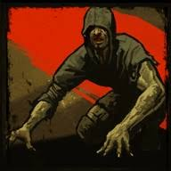
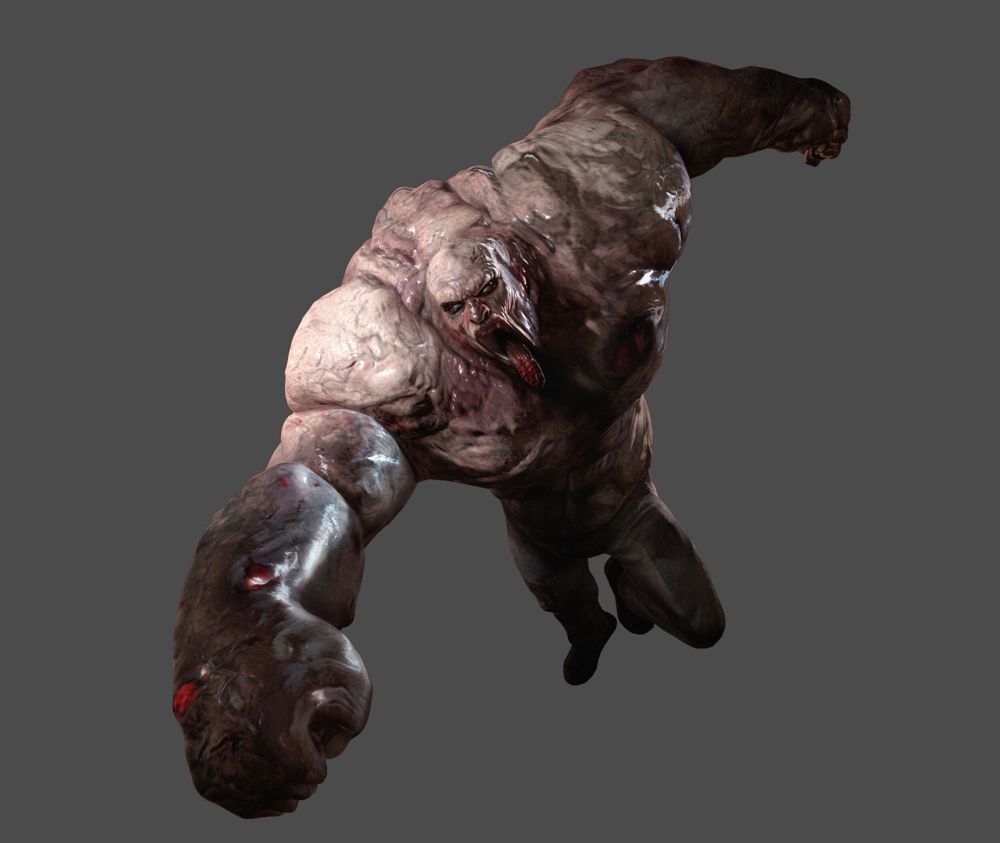
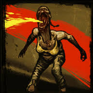
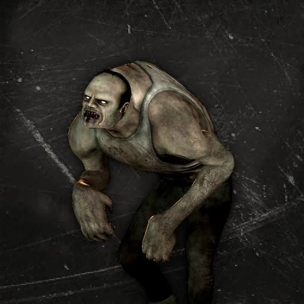
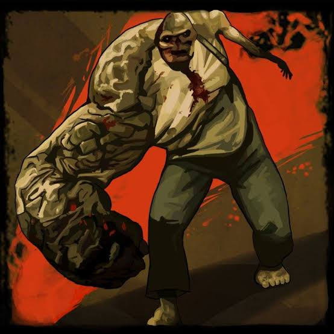

Infectados de Left 4 Dead
Hunter
El Hunter es un infectado especial caracterizado por su gran agilidad y ataques sorpresa. Se mueve en cuatro patas y puede escalar muros y realizar saltos largos para emboscar a los sobrevivientes. Su forma de ataque consiste en abalanzarse violentamente sobre una víctima, derribándola y causando daño continuo hasta que otro jugador lo elimine. Suele emitir gruñidos y chillidos antes de atacar.
Consejo: Escucha sus sonidos y mantente en grupo. Un Hunter puede ser mortal si te encuentra solo.
Smoker

El Smoker usa su larga lengua para atrapar a los sobrevivientes desde largas distancias. Puede jalar a los jugadores hacia sí mismo o hacia peligros cercanos como caídas o zombis comunes, dificultando la movilidad del equipo. A menudo se oculta para sorprender a las víctimas.
Consejo: Rompe el agarre rápidamente para evitar que te arrastre lejos de tus compañeros.
Boomer

El Boomer es un infectado inflado de bilis que al morir explota, cubriendo a los sobrevivientes cercanos con su vómito. Esto atrae a una horda de zombis comunes hacia ellos, aumentando el peligro.
Consejo: Elimínalo a distancia y evita quedar cubierto por su vómito para no atraer a la horda.
Tank
El Tank es un infectado enorme, extremadamente fuerte y resistente. Puede lanzar grandes objetos y golpear a los sobrevivientes con una fuerza brutal, derribándolos y lanzándolos por el aire. Derrotarlo requiere trabajo en equipo y estrategia.
Consejo: Coordina ataques y usa armas pesadas para vencerlo rápidamente.
Witch

La Witch está normalmente sentada y tranquila, pero si se la molesta, su ataque es extremadamente mortal. Puede derribar a un jugador en segundos con un solo golpe. Es mejor evitarla o pasar sigilosamente para no despertarla.
Consejo: Pasa con cuidado y no hagas ruido para evitar su furia.
Infectados de Left 4 Dead 2
Spitter
La Spitter escupe ácido corrosivo que se esparce por el suelo, dañando a quienes se quedan en esa área. Es ideal para dividir al equipo y controlar espacios durante la batalla.
Consejo: Aléjate del área ácida para no recibir daño constante.
Jockey
El Jockey salta sobre los sobrevivientes y toma el control de su movimiento, llevándolos hacia el peligro o alejándolos del grupo. Esto puede poner en riesgo a los jugadores separados.
Consejo: Sacude al Jockey lo más rápido posible para recuperar el control.
Charger
El Charger corre con gran velocidad para embestir a los sobrevivientes, llevando consigo al primer jugador que toque y estrellándolo contra una pared o el suelo. Puede causar gran daño y desorientar al equipo.
Consejo: Mantente atento a su embestida para esquivarla y atacar cuando esté vulnerable.